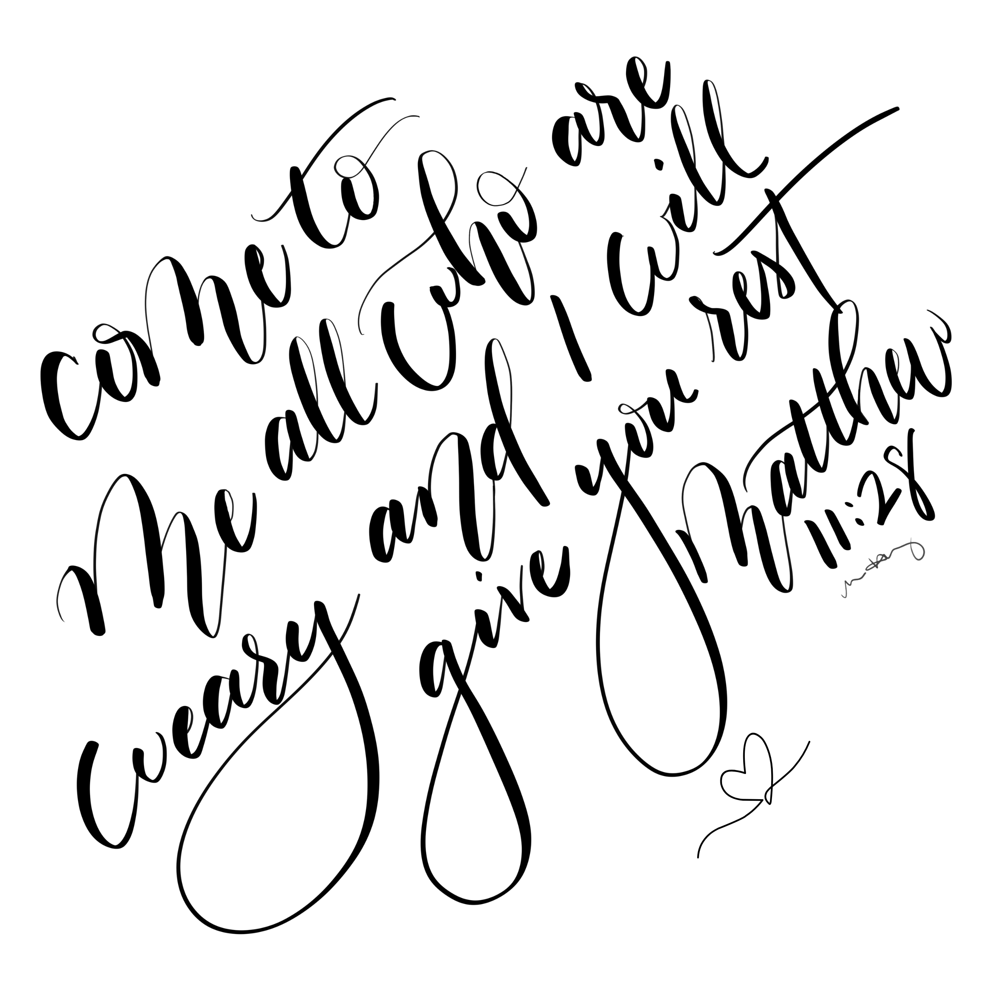
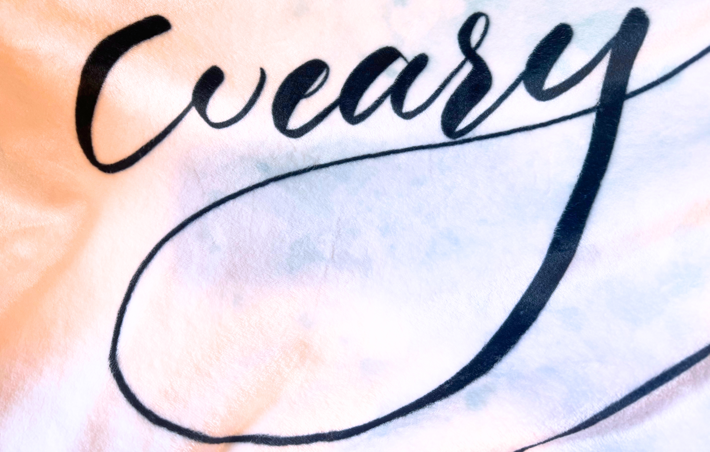

Finding Rest
When life doesn't quite work out the way you thought...
8/21/2026 by Melissa Hundley

There are so many ways that I was wrong in how I anticipated my life turning out. When I was a teenager, I was sure I would be a professional musician playing with amazing symphonies around the world...but then...tendonitis in my thumb (not great when you play viola).
Then after a whole semester as a music major, I decide psychology was my new path. I was going to be a psychologist and help people through the tough times in life...but my theories and methods class taught me I do NOT have enough patience for that...
I found sport and performance psychology and decided to pursue a master's degree it in. I loved the subject matter, but by the time I had finished that degree, I was kind of burnt out on school...it had been seven years at that point...which is also why it was really odd that I looked into attending seminary to study youth and music ministry.
I worked several jobs in the inbetween and ended up moving back home to Oregon. It was nice to be close to family again, but I still didn't really know what I wanted to do when I grew up (spoiler alert...I still don't know the answer to that question). I worked several different jobs in this season until I was hired at a local Christian university in the IT department.
...the problem was...I didn't have any IT experience except for Googling how to fix stuff...
Turns out...that's all you need - plus a willingness to learn (which I had). I worked hard to learn as much as I could. This team had taken a chance on me, and I was determined to make sure they didn't regret it. I watched videos on how to build computers so I could learn more about how they work. I asked questions (a LOT of questions). I discovered that I was really good at this, and my attention to detail and care in helping students and employees with their tech issues became a big asset to the department.

About four and a half years into my IT career I found myself leading this team. I suddenly felt like I wasn't knowledgeable enough in so many areas because due to budget restraints, I lost all my experts. I did everything I could to feel like I was earning my spot as a leader, but amidst increased stress, increased budget cuts, and a messy merger, I was weary.
Not just tired, but weary. I started to dread updates on the state of the school, I wanted to care for our students and employees as best I could, but I didn't have all the resources I needed to do that as well as I wanted. I was emotionally on the edge almost all the time - It didn't take much for me to start crying because I was just overwhelmed and weary.
Now, I should point out that nobody ever told me I had to be everything to everyone (I put that on myself). In my mind, even though we had fewer employees in our department, we still had a job to do, and we needed to support the remaining employees (who were all wearing no fewer than 5 hats each) and our students.
Lucky for me, I had a boss that was super supportive. He saw the strain I was putting myself under (again, nobody else was doing that to me...at least not outright), and encouraged me to take care of myself. I did ok for a little while...partly becuase I had an already planned vacation to Hawaii to celebrate the completion of a second master's degree in management and leadership (side note...that trip was AMAZING and Hawaii is now forever a part of my heart).

In the final season working at the university, the weariness grew like crazy. Dealing with grief knowing that I would be losing my job with a few months notice, stress over figuring out what's next all while trying to find the energy to keep doing my job. My boss, my pastor, and several friends all were encouraging me to take time to rest before starting another job. I (reluctantly) agreed, but was only planning to take a short 2-4 week rest. I had planned a trip to visit friends in Texas for a week, and then in my mind, I was ready for a new job.
God had other plans for me. I had no idea how deep the weariness really went (spoiler alert...it was deep). I needed more than an extended vacation to recover and be my best for another employer. More than that, I needed to learn that maybe this creative gift that I had was meant for more than just making gifts for friends, or making cards for friend's birthdays and such. Maybe this was a ministry and my new job.
Not knowing how to pursue this, I found myself back in the technology world learning how to code. I completed a bootcamp through SheCodes that taught me front-end developer skills. I built websites and several web applications in the few months I was doing this bootcamp. At one point it hit me...What if I created a business that is half technology-related, and half creative? That is how MJH Design Studio was born. I bought myself a domain and built my website (slightly different than what you see now). Later came the Etsy shop after I started teaching myself how to letter on my iPad and create digital versions of my artwork (that way I didn't have to learn how to vectorize scanned images).

This may not sound super restful, but sometimes rest isn't just laying around and sleeping all day (or zoning out watching YouTube videos). But spending time working on things that bring me joy fills me. Those things are gifts that I believe God has given me, and this has been a way to thank Him for those gifts and to hopefully spread the same hope and peace that I have found in Him to others.
This design was inspired by the peace I found in the season of rest God brought me to and through. I hope it brings comfort to you if you find yourself in a season where you are weary and need rest. You can find the Rest Blanket on my Etsy shop MJH Design Studio Gifts.